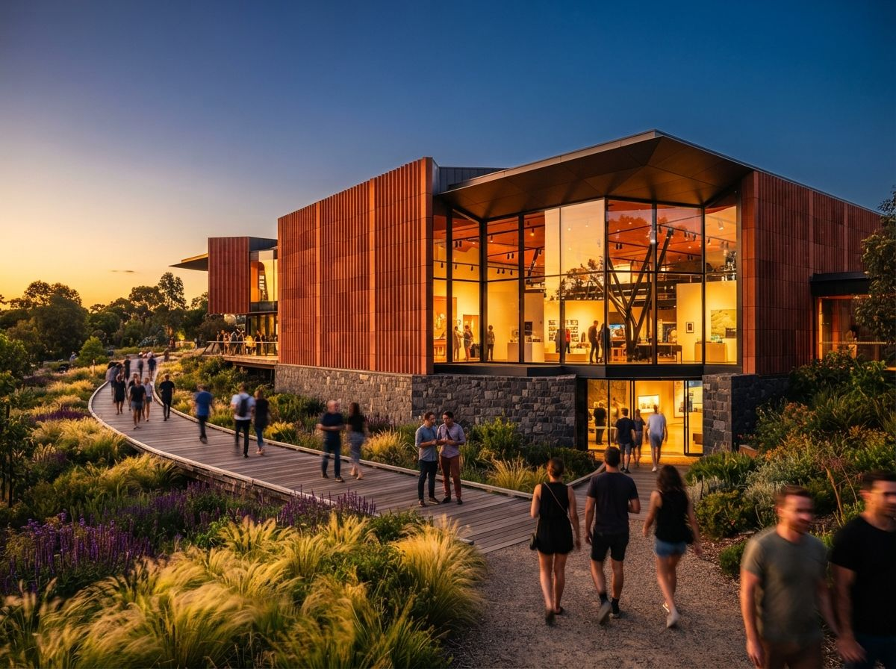
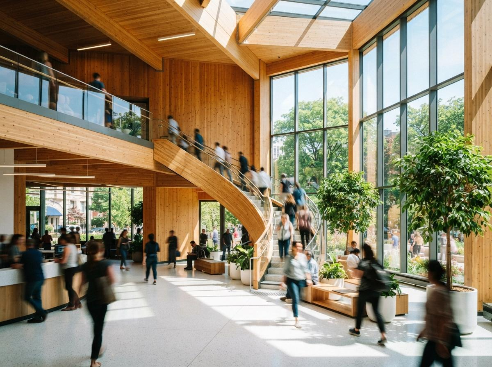

What are AI-augmented architectural visualizations?
AI-augmented architectural visualizations are views of a proposed design in which a generative tool edits an existing drawing or render. Start with a camera view from the model, specify what may change, and compare the edit with the original. Present both when a design decision depends on the difference.
Give a library entrance a brick plinth instead of a stone one. That is the whole commission for this hypothetical image. Keep the door where it is. Keep the sill at sitting height. If the brick version wins because somebody quietly widened the entrance and put a reader on the sill, the meeting has answered a perfectly interesting question about a different library.
Start with the decision that the picture must support
Write the question in the space where the slide title will go. “Should the plinth read as part of the pavement or part of the wall?” is a useful question for a material study. “What do you think?” invites a discussion of the tree. Choose a viewpoint from which someone approaching the entrance can see the joint between pavement and plinth. A distant aerial is an expensive way of avoiding the subject.
Make a plain base view. Choose an overcast sky for a finish comparison if strong shadows would conceal half the sample. Leave enough of the pavement in the frame to judge the relationship. Save that view under the model revision, not under the name of the option you hope will win. Both alternatives should inherit the same unglamorous starting point.
Decide in advance which judgments this view cannot support. A brick-coloured patch may help a client decide whether the base feels grounded. It tells the detailer nothing about where a cut course will land at the threshold. Put that question beside a dimensioned detail. A good presentation can accommodate two different kinds of evidence without asking either to impersonate the other.

Which part of the image should the tool touch?
Chaos documents a consequential difference between Veras engines: with version 6 and older, a masked render affects the selection; with version 7, the engine renders the whole frame again, with the mask directing its attention. For an exploratory image, a changed reflection in the glass might be welcome. For our library comparison, inspect the reflection and the door that contains it.
Choose the tool according to the change you can afford, rather than the software already open on the desktop. Here is how I would divide the library brief:
| Decision | Preferred starting point | Reject the edit if |
|---|---|---|
| Should the base be warmer? | Local edit to a copy of the base render | The threshold or joint spacing changes |
| Should the entrance feel deeper? | Exploratory edit, labelled as a massing idea | It is presented as an agreed recess depth |
| Will a deeper recess actually fit? | A revised plan and model view | A generated perspective is the only evidence |
For the local edit, Adobe describes Photoshop Generative Fill as a non-destructive edit made from a selection, with variations to choose from. Draw the selection around the face of the plinth, leaving the sill cap alone if the proposal keeps it. Describe the intended finish rather than a mood: dark red brick, flush mortar, existing plane. Leave “welcoming civic landmark” for the competition statement.
For exploration, Chaos distinguishes Modify from Replace in Veras: the former aims to retain geometry; the latter invites a different design within the selection. Permission to propose a recess is useful at concept stage. Once a recess wins support, give its depth to the person drawing the plan. Do not give them the perspective and a ruler.
Keep a witness to the geometry
Save the unedited render at the exact crop and resolution of the slide. Keep a line view too, preferably with the entrance edges dark enough to read against both finishes. If Blender supplies the base, its render-pass manual defines the Depth pass as the distance to the nearest visible surface. Use that pass to identify where the plinth returns into the doorway. It describes the original scene, not whatever the generator subsequently paints there.
Place the line view above the candidate and switch it on and off. Follow the head of the opening across the frame, then trace the narrow return at the jamb. Inspect the outer edge of the sill where someone might sit. If those lines agree but the darker brick makes the opening feel narrower, keep the image: a perceived change is precisely what this comparison is for. If the drawn lines disagree, repair the image or discard it.
Spend a second look on things that acquire meaning without moving an edge. Deep mortar shadows can suggest a much rougher finish than the sample board. A reflection can make a solid panel look like another opening. For a more systematic inspection, use the geometry review checklist. Mark the discrepancy on a duplicate, not on the only copy of the source.

What should the client see?
Issue two views at equal size. Keep the base on the left throughout the deck and put the material proposal on the right. Give each the same neutral surround. Avoid setting the proposal against black while the reference floats on white; let the finish earn its contrast against the pavement. Place the physical samples on the table if colour is the decision under discussion.
Write a caption that names the intervention and its limit. For the library: “Right: proposed red brick finish, digitally applied to the entrance plinth. Door position and sill profile remain as drawn on the left. Brick and mortar colours subject to sample approval.” Use the middle sentence only after checking the overlay. The ArchiGen evidence guide makes a useful distinction here: a documented control and an observed result deserve different wording.
Now suppose the client prefers the additional seat that slipped into an early option. Do not bury a good suggestion because it came from the wrong drawing. Pull the image out of the finish comparison, label it “possible seating study,” and ask the architect to draw a section through the sill. The client can endorse investigating a seat without inadvertently approving a masonry finish or promising anybody a comfortable place to sit.
The useful metric is the cost of an honest pair
Budget for the reference and the review as well as the attractive half of the slide. Time one decision from model export through the marked comparison. Include the ten minutes someone spends establishing whether that pale stripe was already in the stone option. Divide the effort by the number of pairs fit to issue, not the number of variations available to scroll through. The cost-per-usable-image worksheet is a starting point; count a pair as one deliverable here.
Try it at the next material meeting. Bring one question, the unchanged view, and an edit that would still make a fair case if its caption were read aloud by the architect who favours the other finish. Keep the rejected options out of the deck but save the marked comparison with the decision. When the contractor asks about the sill, nobody should have to reverse-engineer a promise from the pixels.
File the decision with the view identifier and the date. If the model changes before the next review, carry the material question forward but remake the pair. A new threshold detail deserves a new reference, even if the old picture looks better on the wall.
Let the brick win on the brick.